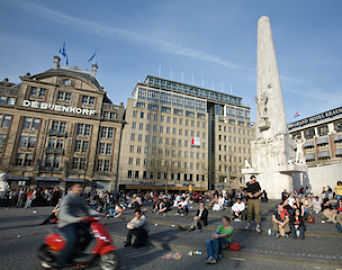
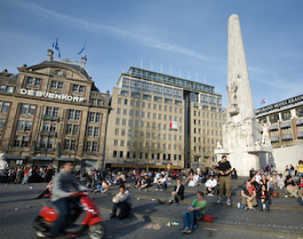

I went to the Netherlands right after my trip to Berlin. I went with the same friend who was with me in Berlin, and we both liked Amsterdam better. Our first few days were spent walking around Amsterdam and eating a lot of stroopwafel.
 

Dam Plaza was fun to visit, especially since we went shopping at De Bijenkorf. We honeslty just walked around and had fun. It was especially beautiful at night.

Other than Amsterdam, the windmills of Kinderdijk was another one of our destinations and it was really a cute trip!